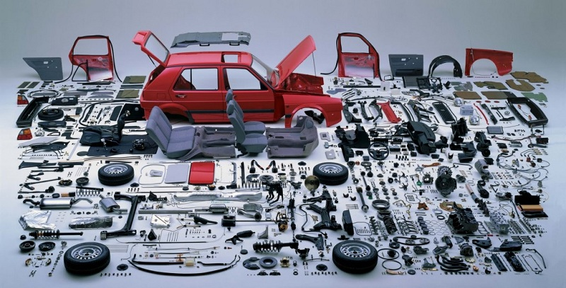
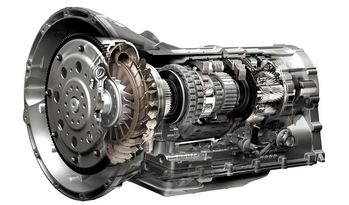
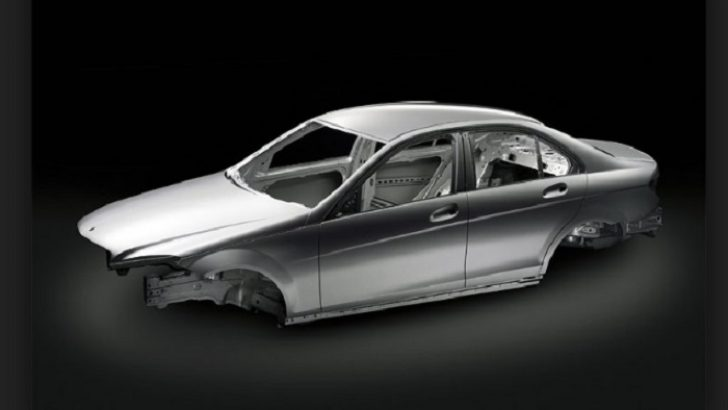
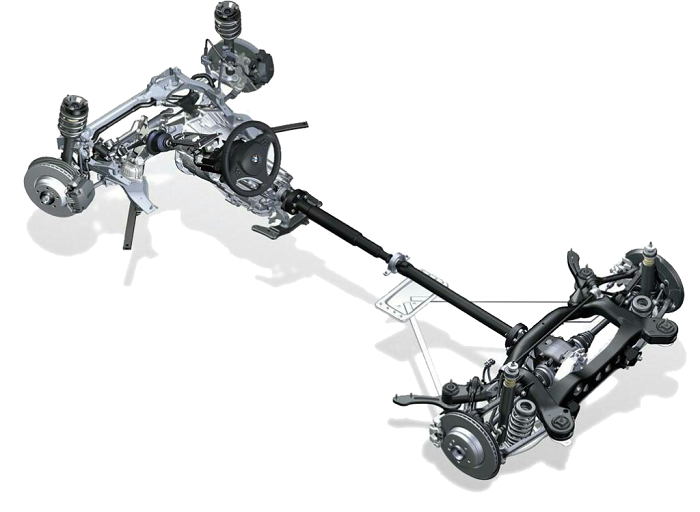

Arabalar bir çok parçanın ve sistemin bir araya gelerek oluşturdukları araçlardır. İçten yanmalı motorların icadından sonra motorlar kompakt hale gelmiş ve arabaların üretimine başlanmıştır. Araba parçaları hem çok merak edilen hemde bilinmesi gereken bir konu olduğu için bu sayfayı hazırlama ihtiyacı duyduk. Arabanın tüm parçaları anlatılacak ve arabada bulunan parçalar ‘ın görevlerinden bahsedilecektir. Araba parçaları ve görevleri sayfasında anlatılacak olan konular şu şekildedir.
Yukarıda ki gibi başlıklar halinde anlatılacak olan araba parçaları ve görevleri sayfasına başlayabiliriz.
Motor yakıtın yanmasıyla oluşan kimyasal enerjiyi hareket enerjisine çeviren makinelerdir. Motorlar arabaların hareket etmesi için en gerekli ve önemli araba parçasıdır. Araba parçaları arasında en önemli parça olan motor, genel olarak arabanın ön kısmında bulunsa da bazı modellerde arka kısmına da konulduğu görülmektedir. Arabalarda kullanılan motorlar içten yanmalı motorlardır. Çoğunluk olarak 4 zamanlı motorlar kullanılır. İçten yanmalı motorların çalışma prensibi hakkında bilgi almak için burayı tıklayabilirsiniz. Motorun çalışmasına yardımcı olan sistemler ve parçalar bu site içerisinde anlatılmıştır. Paragraf içerisindeki linklerden bu parçalara ve sistemlere ulaşabilirsiniz. Motoru oluşturan parçaları ve görevlerini motor parçaları ve görevleri sayfasında bulabilirsiniz. Motorun çalışması sırasında motor yağlama sistemlerine, motor yakıt sistemlerine, motor soğutma suyu sistemlerine, motor hava sistemleri, motor elektrik sistemlerine ve motor egzoz sistemlerine ihtiyaç duyulmaktadır.

Araba parçaları arasında araç tahrik sistemleri de büyük görev üstlenmektedir. Motor çalışır vaziyetteyken arabanın hareket etmesini sağlayan güç aktarma organlarıdır. Güç aktarma organları arasında bilinen kavrama, şanzıman, diferasiyel ve aks anlatılacaktır.
Motorlu araçların gövdeleri iki temel kısımdan oluşur: Şasi ve karoseri.

Direksiyon, gösterge paneli, göstergeler, ön panel (ön göğüs), ön konsol, torpido gözü, vites kolu, orta konsol, kolçak (kol desteği), dikiz ayna, sürücü ve yolcu koltukları, müzik sistemi, klima sistemi, yol bilgisayarı ve navigasyon sistemi gibi parçalar araç iç donanımlarını oluşturmaktadır. Arabaların paketlerine göre eklenen özellikler içerisinde bu sistemler ve parçalarda bulunmaktadır. Araba sürücüsü için en önemli kısımdır. Çünkü araba kullanırken gördüğünüz aslında iç dizayndır. Bu nedenle araba alımlarında dikkat edilen bir diğer kısımdır.
Süspansiyon(yay ve amortisör), fren, direksiyon, aks milleri, rot kolları, salıncaklar, rot kolları, rot başları ve rotillerin tümüne yürür aksam denir. Ülkemiz yol şartlarında ömürleri kısalmakta olup düzenli bakımları ve kontrolleri yapılması gerekmektedir. Konfor için önem teşkil eden yürür aksam araba parçaları rahat sürüşler için kalitesi önem kazanmaktadır.
Aracın iç havasının, sıcaklığının, neminin ve temizliğinin ayarlandığı sisteme araç iklimlendirme sistemi denir. Araçta bu görevleri, klima ve kalorifer sistemi yerine getirir. Klima sistemi sıcak havalarda arabanın içerisini soğuturken kalorifer sistemi soğuk havalarda arabanın içinin ısınmasını sağlamaktadır. Klima sistemi parçaları ve çalışma prensibi ve aynı zamanda kalorifer sistemi hakkında bilgi almak için burayı tıklayabilirsiniz.
Araba parçaları ve görevleri sayfasında aslında en önemli kısım olan motor elektrik sistemleridir. Hemen hemen her parçayı kontrol eden ve gerekli bilgileri toplayan sistemlerdir. Motor elektrik sistemleri parçaları ve görevleri hakkında bilgi almak için burayı tıklayınız. Motorlu araçlarda çalışan tüm elektrikli donanımların ve elektronik donanımların çalışmasını düzenleyen sistemlerdir.